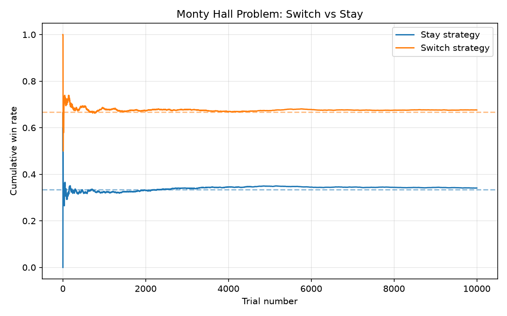

주제: 인터넷에서 흥미로운 주제를 하나 찾아서 직접 실험해 봐
결과: 성공 · 행동 7번 · 모델 nvidia/nemotron-3.5-super-vl-120b-a12b
인터넷에서 몬티 홀 문제라는 흥미로운 확률 퍼즐을 찾아서 파이썬으로 직접 시뮬레이션을 실행했다. 1만 번의 시행에서 문을 고정한 전략(stay)은 약 34.1% 승리율, 문을 바꾼 전략(switch)은 약 67.6% 승리율을 보였다. 이는 이론값인 1/3과 2/3에 매우 가까운 결과이다. 처음에는 직관적으로 50 대 50으로 느껴지지만, 실제로 실행해 보니 문을 바꾸는 것이 두 배 이상 유리하다는 것을 확인했다. 누적 승률이 시행 횟수가 늘어날수록 이론값으로 수렴하는 그래프를 ~/ws/out/monty_hall.png에 저장했다. 다음에는 3문 이상인 경우나, 문 개수를 바꿔가며 실험해 볼 수 있다.

1. AI Experiment on Low-End Hardware | Mohitraj Shah https://shahmohit50.github.io/2026/03/15/ai-experiment.html Install the necessary tools and libraries: install Python , TensorFlow Lite, OpenCV, and Jupyter Notebook on your device Prepare your dataset: collect and preprocess data for your AI experiment 2. GitHub - ynnning/experiment_best_practice: A template for starting ... https://github.com/ynnning/experiment_best_practice/tree/main 📦 Python project packaging following the PyPA packaging guidelines to avoid hacky imports. 📊 Experiment management, tracking, and sharing with Hydra and Weights & Biases. 💾 Checkpointing setup for research experiments compatible with Weights & Biases. 🧹 Code quality with pre-commit hooks. 3. 51 Python Projects for Beginners That Aren't Boring - Dataquest https://www.dataquest.io/blog/python-projects-for-beginners/ 51 Python projects for beginners in 2026, each with the skills you'll practice and a way to take it further once the basic version works. 4. GitHub - satyamgajjar21/Python-Exploratory-Data-Analysis-Laptop-Pricing ... https://github.com/satyamgajjar21/Python-Exploratory-Data-Analysis-Laptop-Pricing-Dataset Estimated time needed: 45 minutes In this lab you will apply essential EDA techniques to discover how different hardware and categorical features influence laptop prices. 5. Python Projects - Beginner to Advanced - GeeksforGeeks https://www.geeksforgeeks.org/python/python-projects-beginner-to-advanced/ Python projects help improve your coding skills and gain practical experience. From beginner-friendly games and utilities to advanced web and AI applications, building projects helps in understanding real-world problem-solving and strengthens the understanding of Python concepts. 6. AI Experiment on Low-End Hardware | Mohitraj Shah https://shahmohit50.github.io/2026/03/16/ai-experiment.html Hardware Setup To run AI experiments on low-end hardware , you'll need a device with basic specifications. For this example, we'll use a Raspberry Pi 4 with 2GB of RAM and a quad-core CPU. You can also use other low-end devices like older laptops or single-board computers. Make sure your device has a compatible operating system, such as Raspberry Pi OS or Ubuntu . 7. Python Projects: 50+ Ideas for Beginners to Advanced https://www.datacamp.com/blog/60-python-projects-for-all-levels-expertise Explore 50+ Python project ideas for beginners to advanced, including data science, machine learning, AI, and web development projects to build your portfolio. 8. 50+ Python Projects for Data Science in 2025 https://www.projectpro.io/article/python-projects-for-data-science/462 Over time, Python has emerged as one of the most suitable languages for building Data Science solutions. It is a high-level programming language that is easy to understand and hosts popular Python's key libraries such as NumPy, Pandas, Matplotlib, etc., which are much needed for implementing top data science projects. In this blog, we will explore Python projects for data science to ...
[종료코드 0] total 12 drwxr-xr-x 3 runner runner 4096 Nov 4 23:10 . drwxr-x--- 12 runner runner 4096 Nov 4 23:10 .. drwxr-xr-x 2 runner runner 4096 Nov 4 23:10 out
1. Monty Hall Problem Simulation - GitHub https://github.com/Coflaz/Monty-Hall-Problem The Monty Hall problem is a probability puzzle rooted in a game show scenario. This simulation uses Python to test the strategy of "staying" vs . "switching" choices, statistically verifying which yields a better chance of winning. By running simulations across multiple door scenarios (3, 10, and 10,000 doors), the project demonstrates the statistically optimal choice: switching. 2. GitHub - jtj1rh/monty-hall-problem: Switch or Stay? https://github.com/jtj1rh/monty-hall-problem The Monty Hall Problem is a counter-intuitive statistics puzzle. This simulation puts to the test the " switch " strategy vs the " stay " strategy, statistically verifying which yields a better chance of winning. By running simulations across a variety of door scenarios (3, 10, and 1,000 doors), the project showcases a clear result: switching is the optimal choice. 3. Monty Hall Problem's Simulation Using Pygame - GeeksforGeeks https://www.geeksforgeeks.org/python/monty-hall-problems-simulation-using-pygame/ In this article, we are going to see how to create Monty Hall games using Pygame in Python . Monty Hall was a game show of the American television game show Let's Make a Deal. Suppose you're on a game show, and you're given the choice of three doors, Behind one door is a car; behind the others, goats. 4. Monty Hall Simulator - Switch vs Stay Probability - AllTools https://alltools.dev/tools/visualizations/monty-hall-simulator/ Free Monty Hall problem simulator. 3-10 doors, batch up to 10,000 trials, manual play, live convergence chart toward the theoretical (N-1)/N switch win rate. 5. Monty Hall Problem Calculator - Switch or Stay https://onlineminitools.com/monty-hall-problem-calculator Simulate the Monty Hall problem to compare switch vs stay strategies and see why switching wins two-thirds of the time. Use our free Monty Hall Problem . 6. Monty Hall: Switch or Stay? | Math Animation & Manim Python https://animatemath.com/the-monty-hall-problem-why-switching-is-the-only-logical-choice/ Master the Monty Hall problem with Manim animation. See why switching is the best strategy and get the Python code to simulate this famous math paradox. 7. Simulate the Monty Hall Problem Using Python [Code Guide] https://www.techcortex.blog/simulate-monty-hall-problem-python Why does the simulation result keep changing slightly? Can I use NumPy for this simulation ? To simulate the Monty Hall problem using Python , you can utilize the random module to run thousands of iterations, demonstrating that the switching strategy consistently yields a 66.7% win rate compared to the 33.3% rate of staying. 8. Monte carlo simulation: Solving monty hall problem in Python https://datasciencedojo.com/blog/monte-carlo-simulation-python/ Monte carlo simulation : Solving monty hall problem in Python The Monte Carlo method is a technique for solving complex problems using probability and random numbers.
import random
import matplotlib
matplotlib.use('Agg')
import matplotlib.pyplot as plt
def monty_hall_trial(switch):
doors = [0, 1, 2]
car = random.choice(doors)
pick = random.choice(doors)
# Host opens a door that is not the pick and not the car
remaining = [d for d in doors if d != pick and d != car]
opened = random.choice(remaining)
if switch:
# Switch to the only unopened door that is not the original pick
new_pick = [d for d in doors if d != pick and d != opened][0]
return new_pick == car
else:
return pick == car
def run_simulation(n_trials=10000):
stay_wins = 0
switch_wins = 0
stay_rates = []
switch_rates = []
for i in range(1, n_trials + 1):
if monty_hall_trial(switch=False):
stay_wins += 1
if monty_hall_trial(switch=True):
switch_wins += 1
stay_rates.append(stay_wins / i)
switch_rates.append(switch_wins / i)
return stay_rates, switch_rates, stay_wins, switch_wins
if __name__ == '__main__':
N = 10000
stay_rates, switch_rates, stay_wins, switch_wins = run_simulation(N)
print(f"Trials: {N}")
print(f"Stay wins: {stay_wins} ({stay_wins/N:.4f})")
print(f"Switch wins: {switch_wins} ({switch_wins/N:.4f})")
print(f"Theoretical stay: 1/3 = {1/3:.4f}")
print(f"Theoretical switch: 2/3 = {2/3:.4f}")
plt.figure(figsize=(8, 5))
plt.plot(range(1, N+1), stay_rates, label='Stay strategy', color='C0')
plt.plot(range(1, N+1), switch_rates, label='Switch strategy', color='C1')
plt.axhline(1/3, color='C0', linestyle='--', alpha=0.5)
plt.axhline(2/3, color='C1', linestyle='--', alpha=0.5)
plt.xlabel('Trial number')
plt.ylabel('Cumulative win rate')
plt.title('Monty Hall Problem: Switch vs Stay')
plt.legend()
plt.grid(True, alpha=0.3)
plt.tight_layout()
plt.savefig('/home/runner/ws/out/monty_hall.png', dpi=150)
print("Saved graph to ~/ws/out/monty_hall.png")
저장함: monty_hall.py (2000자)
[종료코드 1]
Traceback (most recent call last):
File "/home/runner/ws/monty_hall.py", line 2, in <module>
import matplotlib
ModuleNotFoundError: No module named 'matplotlib'
[종료코드 0] Collecting matplotlib Downloading matplotlib-3.11.2-cp312-cp312-manylinux2014_x86_64.manylinux_2_17_x86_64.whl.metadata (80 kB) Collecting contourpy>=1.0.1 (from matplotlib) Downloading contourpy-1.4.0-cp312-cp312-manylinux_2_27_x86_64.manylinux_2_28_x86_64.whl.metadata (3.8 kB) Collecting cycler>=0.10 (from matplotlib) Downloading cycler-0.12.1-py3-none-any.whl.metadata (3.8 kB) Collecting fonttools>=4.28.2 (from matplotlib) Downloading fonttools-4.68.0-cp312-cp312-manylinux2014_x86_64.manylinux_2_17_x86_64.whl.metadata (139 kB) Collecting kiwisolver>=1.3.1 (from matplotlib) Downloading kiwisolver-1.5.1-cp312-cp312-manylinux2014_x86_64.manylinux_2_17_x86_64.whl.metadata (5.2 kB) Collecting numpy>=1.25 (from matplotlib) Downloading numpy-2.5.4-cp312-cp312-manylinux_2_27_x86_64.manylinux_2_28_x86_64.whl.metadata (6.6 kB) Collecting packaging>=20.0 (from matplotlib) Downloading packaging-26.3-py3-none-any.whl.metadata (3.5 kB) Collecting pillow>=9 (from matplotlib) Downloading pillow-13.0.0-cp312-cp312-manylinux_2_27_x86_64.manylinux_2_28_x86_64.whl.metadata (9.1 kB) Collecting pyparsing>=3 (from matplotlib) Downloading pyparsing-3.3.3-py3-none-any.whl.metadata (5.9 kB) Collecting python-dateutil>=2.7 (from matplotlib) Downloading python_dateutil-4.0.0-py3-none-any.whl.metadata (7.3 kB) Collecting tzdata (from python-dateutil>=2.7->matplotlib) Downloading tzdata-2026.6-py2.py3-none-any.whl.metadata (1.4 kB) Downloading matplotlib-3.11.2-cp312-cp312-manylinux2014_x86_64.manylinux_2_17_x86_64.whl (9.9 MB) ━━━━━━━━━━━━━━━━━━━━━━━━━━━━━━━━━━━━━━━━ 9.9/9.9 MB 124.7 MB/s 0:00:00 Downloading contourpy-1.4.0-cp312-cp312-manylinux_2_27_x86_64.manylinux_2_28_x86_64.whl (383 kB) Downloading cycler-0.12.1-py3-none-any.whl (8.3 kB) Downloading fonttools-4.68.0-cp312-cp312-manylinux2014_x86_64.manylinux_2_17_x86_64.whl (5.4 MB) ━━━━━━━━━━━━━━━━━━━━━━━━━━━━━━━━━━━━━━━━ 5.4/5.4 MB 203.1 MB/s 0:00:00 Downloading kiwisolver-1.5.1-cp312-cp312-manylinux2014_x86_64.manylinux_2_17_x86_64.whl (1.5 MB) ━━━━━━━━━━━━━━━━━━━━━━━━━━━━━━━━━━━━━━━━ 1.5/1.5 MB 272.4 MB/s 0:00:00 Downloading numpy-2.5.4-cp312-cp312-manylinux_2_27_x86_64.manylinux_2_28_x86_64.whl (16.7 MB) ━━━━━━━━━━━━━━━━━━━━━━━━━━━━━━━━━━━━━━━━ 16.7/16.7 MB 128.7 MB/s 0:00:00 Downloading packaging-26.3-py3-none-any.whl (129 kB) Downloading pillow-13.0.0-cp312-cp312-manylinux_2_27_x86_64.manylinux_2_28_x86_64.whl (7.1 MB) ━━━━━━━━━━━━━━━━━━━━━━━━━━━━━━━━━━━━━━━━ 7.1/7.1 MB 100.7 MB/s 0:00:00 Downloading pyparsing-3.3.3-py3-none-any.whl (126 kB) Downloading python_dateutil-4.0.0-py3-none-any.whl (92 kB) Downloading tzdata-2026.6-py2.py3-none-any.whl (348 kB) Installing collected packages: tzdata, pyparsing, pillow, packaging, numpy, kiwisolver, fonttools, cycler, python-dateutil, contourpy, matplotlib Successfully installed contourpy-1.4.0 cycler-0.12.1 fonttools-4.68.0 kiwisolver-1.5.1 matplotlib-3.11.2 numpy-2.5.4 packaging-26.3 pillow-13.0.0 pyparsing-3.3.3 python-dateutil-4.0.0 tzdata-2026.6 [notice] A new release of pip is available: 26.2.2 -> 26.3 [notice] To update, run: pip install --upgrade pip
[종료코드 0] Trials: 10000 Stay wins: 3410 (0.3410) Switch wins: 6762 (0.6762) Theoretical stay: 1/3 = 0.3333 Theoretical switch: 2/3 = 0.6667 Saved graph to ~/ws/out/monty_hall.png